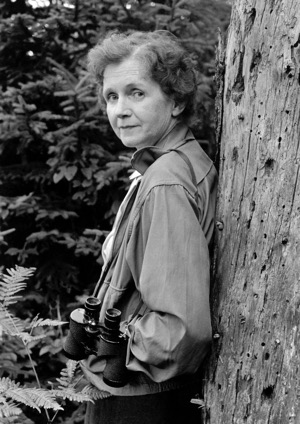

Rachel Carson College dedication and talk
Dedication ceremony
Please join us as we dedicate Rachel Carson College (formerly College Eight) and celebrate UC Santa Cruz’s legacy of environmentalism—a tradition that sent its roots deep with the founding of College Eight in 1972—and the future of the environmental movement at UC Santa Cruz and the college. It marks a great day for our campus, the Campaign for UC Santa Cruz, future generations of students—and the Earth.
12–1 p.m.
Rachel Carson College Courtyard
Light refreshments will be served
Complimentary parking will be available in parking lots 161 and 162, located on Oakes Circle off of Heller Drive. Please follow road signs from the West Entrance of campus. If you have questions about the event, please contact the Special Events Office, specialevents@ucsc.edu or (831) 459-5003.
William Souder talk
Biographer William Souder, author of On a Farther Shore, will give a talk on Rachel Carson’s legacy in the evening.
William Souder, On a Farther Shore
Thursday, October 6
5 p.m.
Music Recital Hall
Free and open to the public
Register
The legacy of Rachel Carson
Writer and conservationist Rachel Carson (1907–1964) is widely credited with launching the modern environmental movement. Her 1962 book, Silent Spring, dramatically chronicled the damage caused by indiscriminate application of chemicals in an attempt to control pests. The naming and endowment of Rachel Carson College, formerly College Eight, by the Helen and Will Webster Foundation honors Carson’s courage and pivotal role in awakening the public to environmental issues.
Silent Spring drew its title from a striking decline in the nation’s bird populations—“the early mornings are strangely silent where once they were filled with the beauty of bird song,” Carson wrote. The book was an immediate bestseller. The chemical industry responded by launching intense attacks on Carson’s reputation and scholarship. While terminally ill with breast cancer, she calmly defended her work at congressional hearings. The impact of her work continues to reverberate today.
The endowment by the Helen and Will Webster Foundation ensures the college, founded in 1972 with the theme Environment and Society, can provide research and educational opportunities for students in perpetuity. The gift package also establishes a chair in ecology and environmental justice and a chair in science communication.